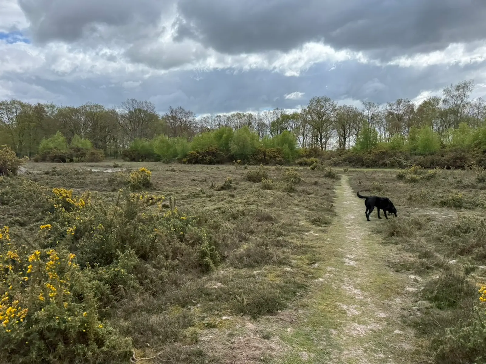
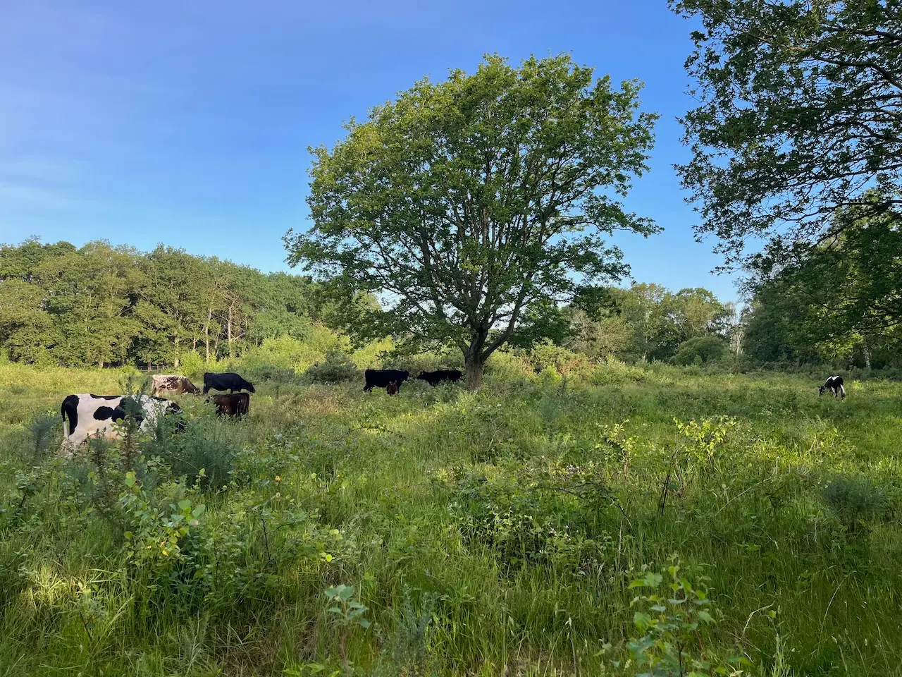
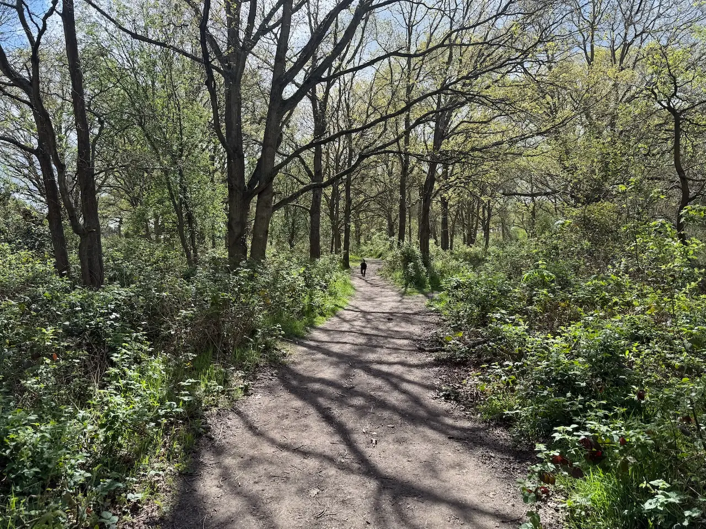
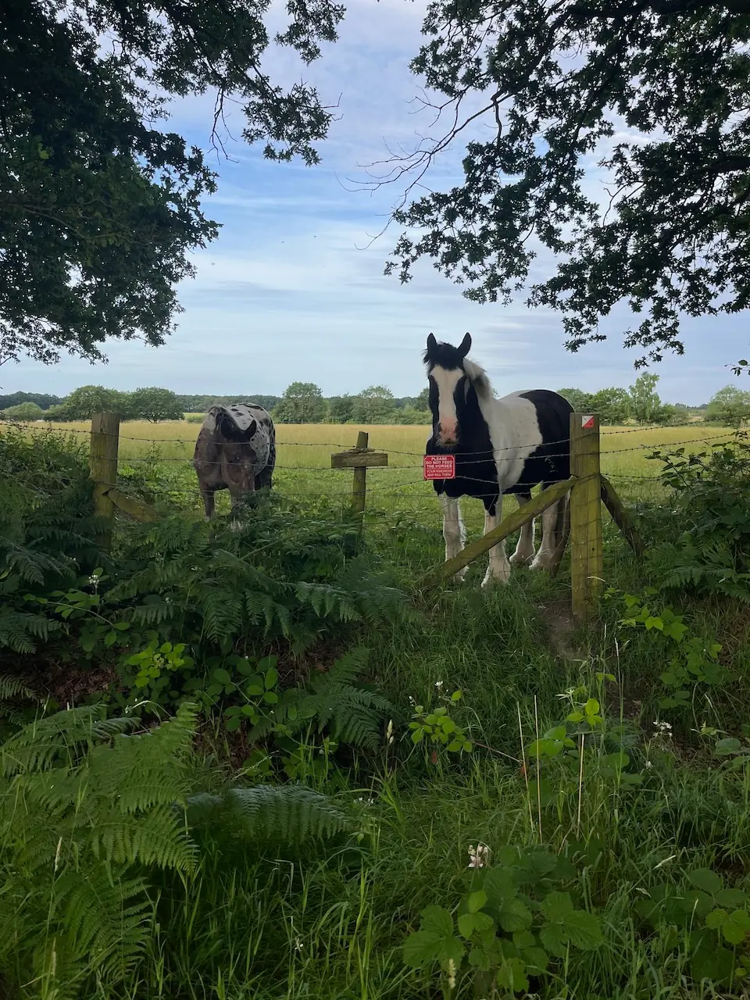
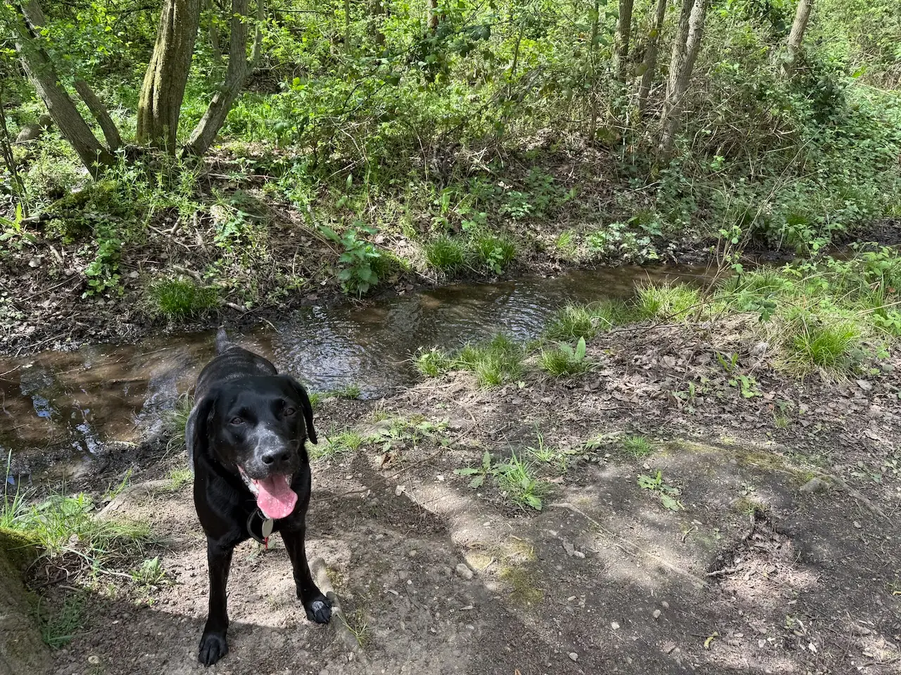
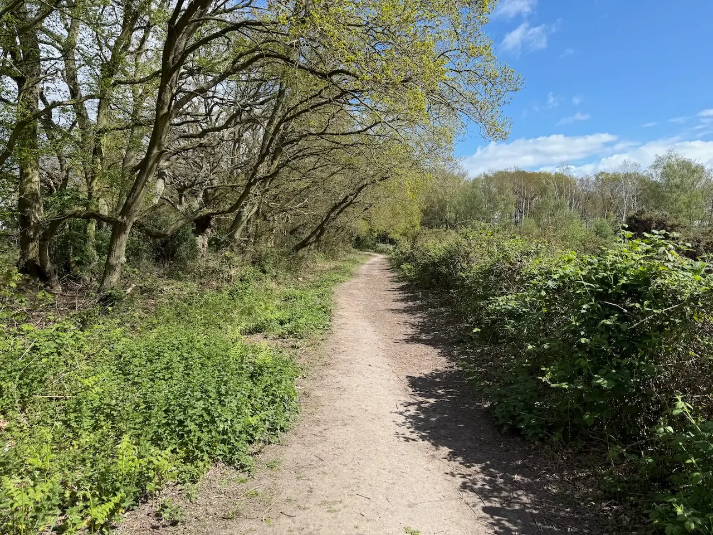
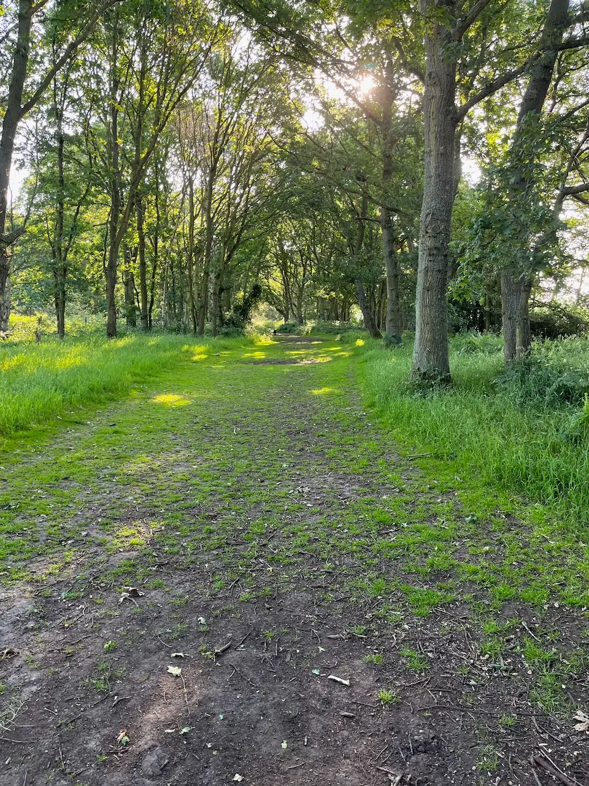
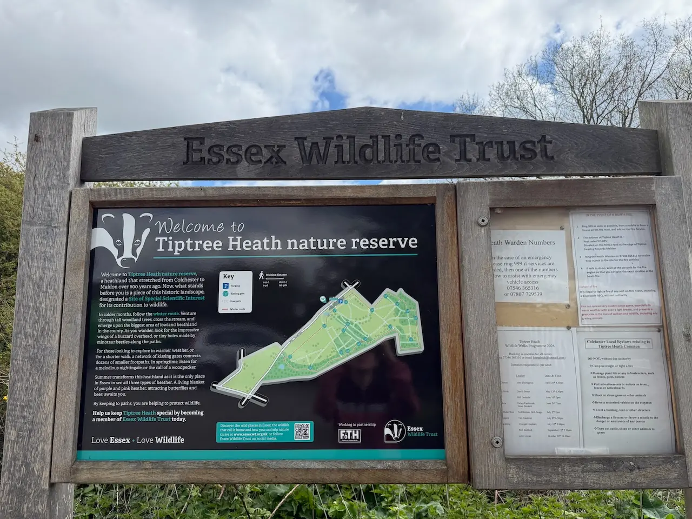

Tiptree Heath Circular
Circular

Tiptree Heath is one of Essex's best hidden woodland walks. Expect sandy trails, open heathland and plenty of sniffing opportunities.
Local tip: The car park fills quickly after 10am on sunny Sundays - go early for a quiet walk and an easy space.
Honest ratings, so you can decide in seconds whether it suits your dog.
How we rate this
How we rate this
How we rate this
How we rate this
How we rate this
How we rate this
How we rate this
How we rate this
See what it actually looks like before you go.











Circular
Circular
Parking & directions. Free car park off Maldon Road (B1022) between Tiptree and Maldon - search "Tiptree Heath car park". The reserve is signposted from the road and the trail begins at the car park gate.
Tiptree Heath is the largest remaining area of lowland heath in Essex, and it has a gentle, unhurried feel that suits dogs who like to take their time. Soft, meandering trails wind through silver birch, gorse and heather, with plenty of shade in the warmer months and dappled light filtering through the canopy.
The paths are well-defined and mostly level, making it an easy, low-stress loop. Because the reserve rarely gets busy, it's a reassuring choice for reactive dogs or those still building confidence around other walkers. You'll often have whole stretches of the trail to yourselves - just birdsong, the crunch of the path, and a very happy nose.
After rain a few sections can get moderately muddy, so wellies are wise in winter. There's very little shade right out on the open heath, so take water in summer.
Already heading to Tiptree? Here's what other local dog owners pair with this walk.
A traditional tea room set within the historic Wilkin & Sons jam factory, serving hearty breakfasts, classic lunches, cream teas and homemade favourites alongside the story of Tiptree's famous jam-making heritage.
A dog-friendly café at Tom's Farm Shop serving traditional breakfasts, homemade cakes and its speciality smoked menu.
An award-winning family-run pub on the River Blackwater, serving traditional homemade food made with locally sourced ingredients.
Nestled in the charming Essex village of Feering, The Sun Inn has welcomed travellers, locals and wandering souls for centuries.
A dog-friendly village pub with cosy open fires, quality food and easy access to the surrounding Essex countryside and walking trails.
The Red Dog is a quality burger and breakfast restaurant based in the small village of Inworth, close to Tiptree, Feering and Kelvedon.
Other dog-friendly walks within easy reach of Tiptree Heath Nature Reserve.


From local dog owners who've walked it.
Take water in summer - there's very little shade once you're out on the heath.
The bluebells are absolutely stunning in April. Worth a special trip.
Park before 10am on a sunny Sunday or you'll be circling for a space.
★ This walk doesn't have any community tips yet.
Know something that would help another dog owner?
Have you spotted something we've missed?
We'd love your help keeping Dogs of Essex accurate and up to date.
Managed by Essex Wildlife Trust.